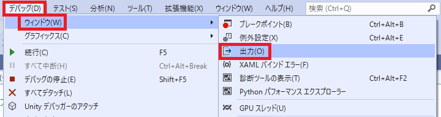
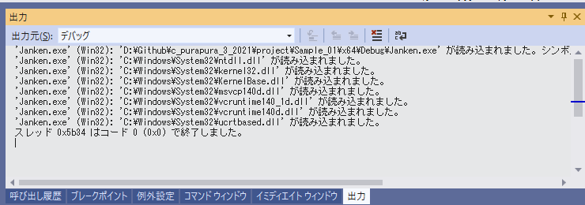

呼び出し履歴を開くと画面の下の方に、呼び出し履歴のウィンドウが追加されます(図1.14)。
呼び出し履歴を開くと画面の下の方に、呼び出し履歴のウィンドウが追加されます(図1.14)。
このチャプターでは、デバッガの利用をさらに見ていきましょう。 この節では二つのプログラムを使用します。次のURLからプログラムをダウンロードしておいてください。
関数の呼び出し履歴を確認することができます。 呼び出し履歴は、メニューの「デバッグ/ウィンドウ/呼び出し履歴」を選択すると開くことができます(図1.13)。
図1.13
呼び出し履歴を開くと画面の下の方に、呼び出し履歴のウィンドウが追加されます(図1.14)。
図1.13
呼び出し履歴はブレイクポイントでプログラムを停止しているときに利用することができます。 呼び出し履歴は、関数がどこから呼ばれているのかをコールされてきたのかを確認することができます。 図1.15はDispComNoTe()のブレイクポイントでプログラムが停止しています。
図1.15

このとき、呼び出し履歴を確認すると、DispComNoTe()はmain()から呼ばれていることが分かります。 呼び出し元のプログラムをは、呼び出し元の関数名をダブルクリックすることで確認することができます。 (注意：呼び出し元に戻ったときに、１行ずれているので注意が必要です。)
Sample_01を利用して呼び出し履歴を使ってみましょう。
DispPlayerNoTe()の10行目にブレイクポイントを設置してください。
では、じゃんけんゲームをデバッガありで実行して、プレイして先ほどのブレイクポイントでプログラムを停止させてください。
プログラムを停止させることができたら、呼び出し履歴をつかって、DispPlayerNoTe()が何行目から呼ばれているか確認してください。
プログラムからのコンソール出力を確認することができます。 出力は、メニューの「デバッグ/ウィンドウ/出力」を選択することで開くことができます(図1.16)。
図1.16  開くと画面の下の方に、出力ウィンドウが追加されます(図1.17)。
図1.17  出力ウィンドウには、プログラムから重要なランタイムのエラーメッセージが出力されている場合があります。 特にDirectXなどでのプログラミングにおいて、動作がおかしいなどの原因不明のエラーが起きた時は、真っ先に出力ウィンドウを調べましょう。 DirectXからエラーメッセージが出力されている場合があります。 君たちのプログラムで出力ウィンドウに値を出力することもできます。 出力ウィンドウへの出力はOutputDebugStringA()を利用します。
OutputDebugStringA("Hello world\n");
このような機能は、ゲーム実行中にプレイヤーの体力などを確認したいときに利用します。
Sample＿01を利用して、出力ウィンドウに値を出力するコードを追加しましょう。 main.cppの87行目にリスト1.1のプログラムを入力してください。
//【ハンズオン】出力ウィンドウを使ってみる。
char text[256];
sprintf(text, "player = %d, com = %d\n", player, com);
OutputDebugStringA(text);
入力出来たら実行してください。 出力ウィンドウに変数playerとcomの数値が出力されるようになります。
最後に超強力なデバッガの機能、「データブレイクポイント」を紹介します。 この機能を使うと、変数の値が変更されたときにプログラムを停止させることができます。 変数の値が不正な値に書き換えらえて意図しない不具合が起きることがあります。 このような不具合の原因を調べることは、大規模なプロジェクトになってくると、非常に難しいこととなってきます。 データブレイクポイントは、このような不正な値の書き換えのデバッグ作業を強力にサポートしてくれます。 データブレイクポイントを設置するためには、監視したいデータのアドレスが必要になってきます。 そのため、ウォッチ機能を使って、対象の変数のアドレスを調べる必要があります。 この設置の仕方を文章で伝えるのは、少々手間ですので、下記の動画を参照してみてください。
ウォッチウィンドウに「&player」と入力して、アドレスをコピーしてください(図1.18)。
図1.18

メニューの「デバッグ/ブレイクポイントの作成/データブレイクポイント」を選択して、データブレイクポイントの作成画面を開く。 開けたら、図1.19のように変数playerのアドレスをコピーして、データブレイクポイントを作成する。
プログラムを再開して、変数playerの値が変わったタイミングでプログラムが停止することを確認してください。
次の評価テストを行いなさい。 評価テストへジャンプ